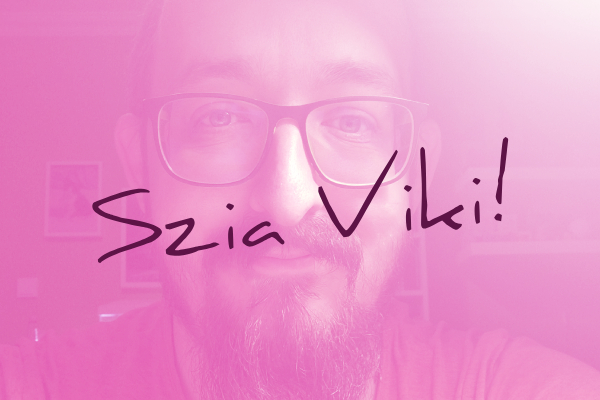
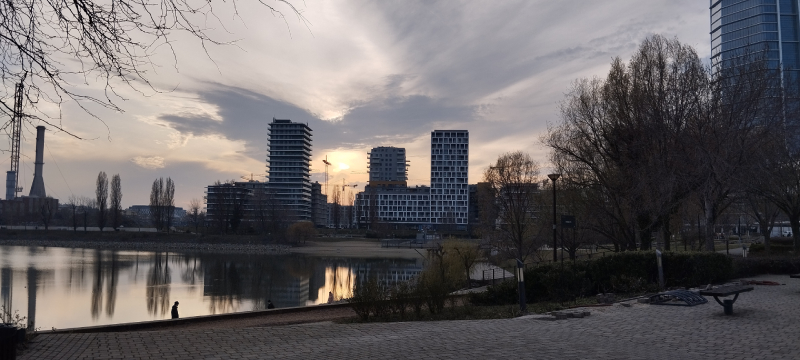
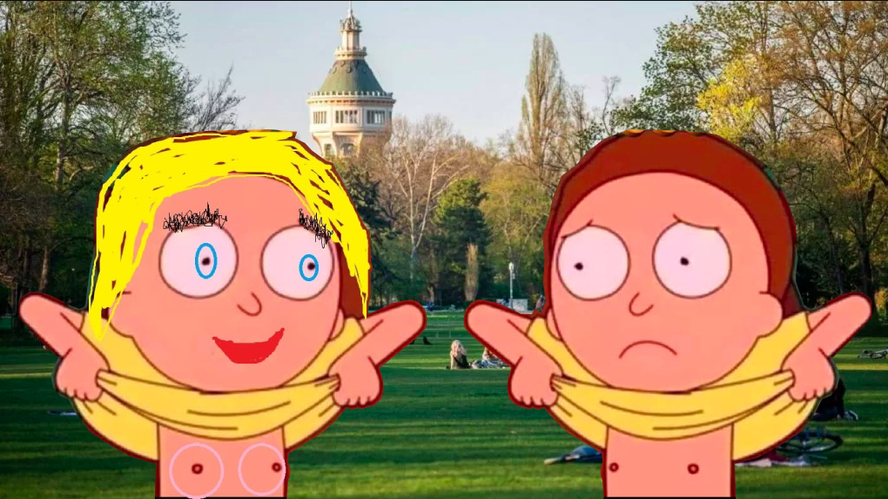
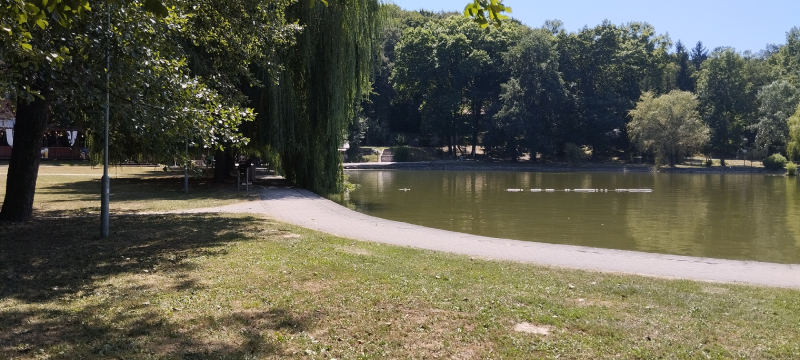
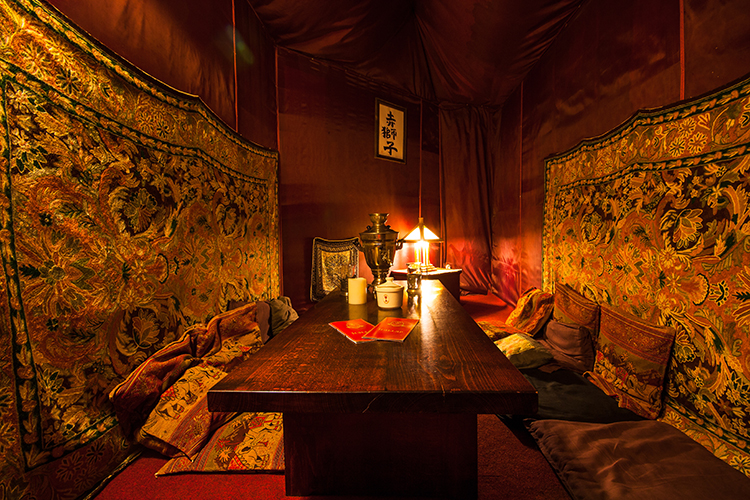
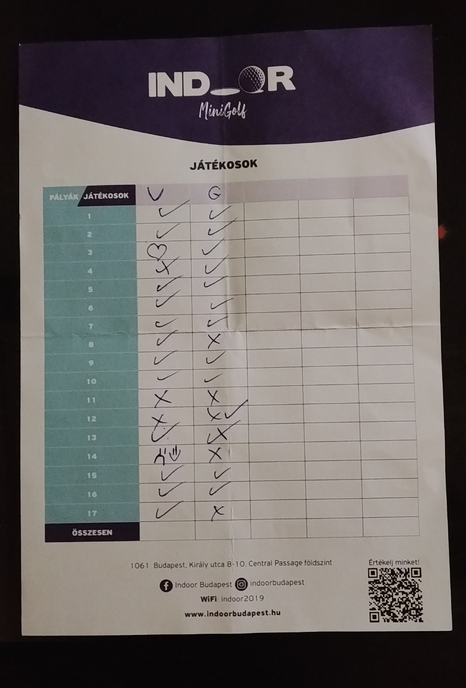
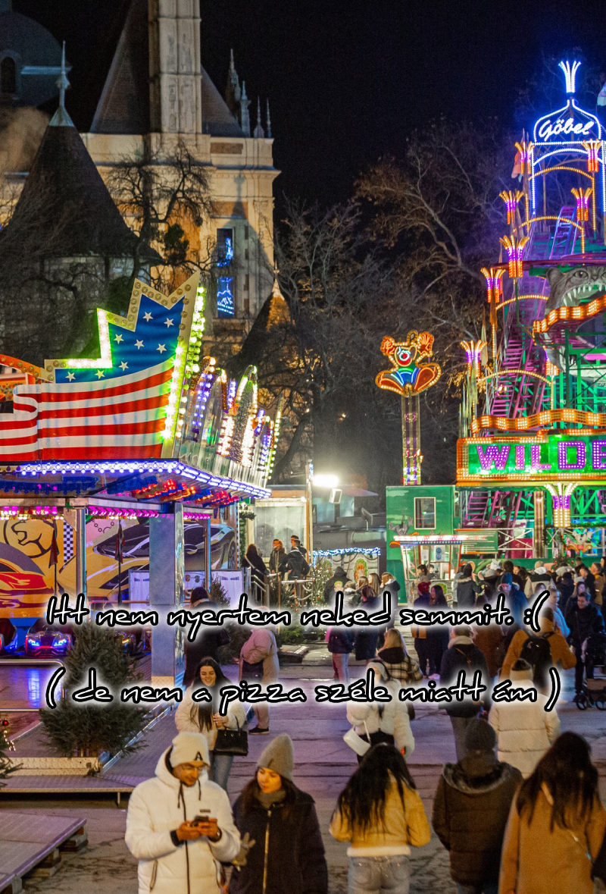
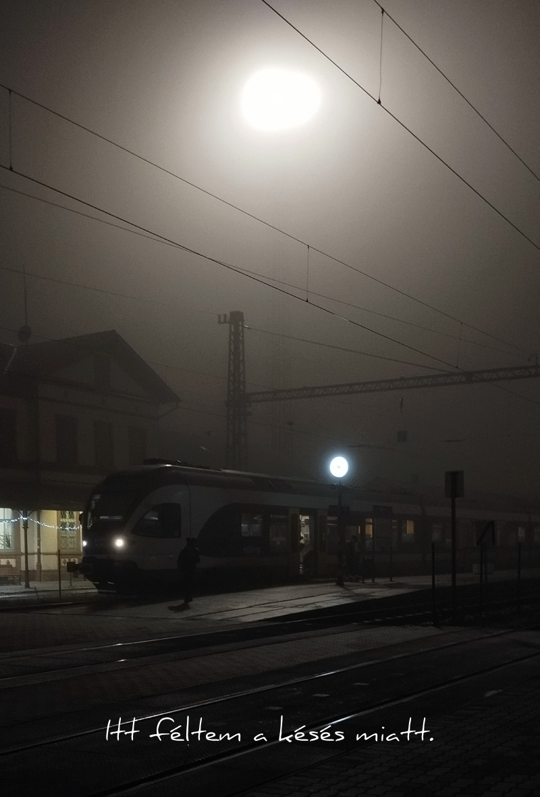
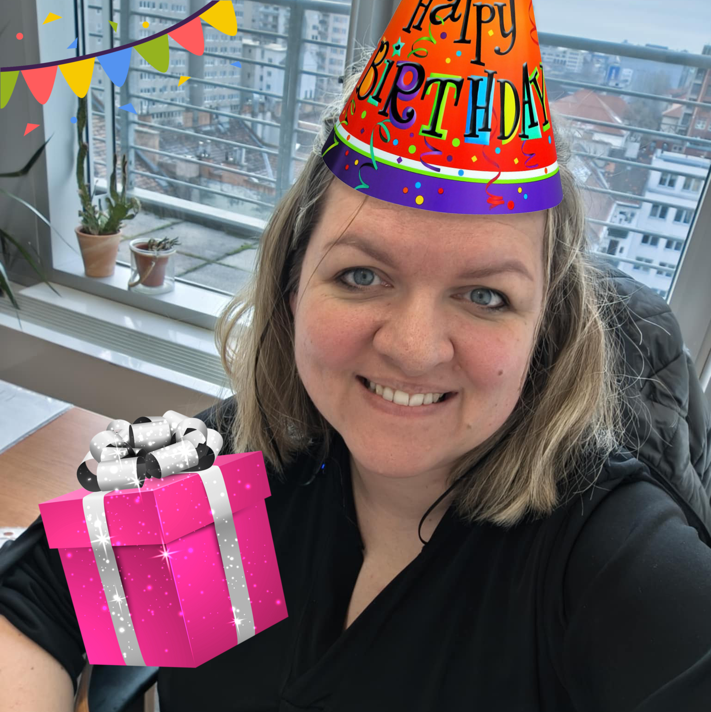

Készültem neked egy kis meglepetéssel... Kattints tovább! ✨

Itt, az - elfelejtettem a nevét - helyen vesztettük el a "valóságban is láttalak" szüzességünk. 😊

Margit-sziget: csak azért nem vágytam a halálra a meleg miatt, mert te ott voltál.

Emlékszel még erre a napra? ☀️ Itt nem másztam rád. 😃

Hmm... tea. Hmm... te. ❤️

Szülinapod van. Ma mondhatod, hogy tiéd a több pont. 🙃


Hopp, egy igazi randi! ✨

Isten éltessen sokáig, Viki! 🎂🎉🥳
Vissza
1 / 8
Tovább ✨